Curb Cuts and Cast-Ons
Design should spark joy, solve problems, and feel like you.

Accessibility
- Whimble Event Attendants Will be at All Events
-
- ASL Interpreters at Some Events, and the Lead Artist Liz, is Relearning ASL
-

- Therapy Dogs
-

- Blind and Low Vision Friendly. Lead Artist’s Mom is Blind
-
- Service Dog and Guide Dog Friendly Graasy and concrete releif areas. Comfy sanitized floor mats and water bowls.
-
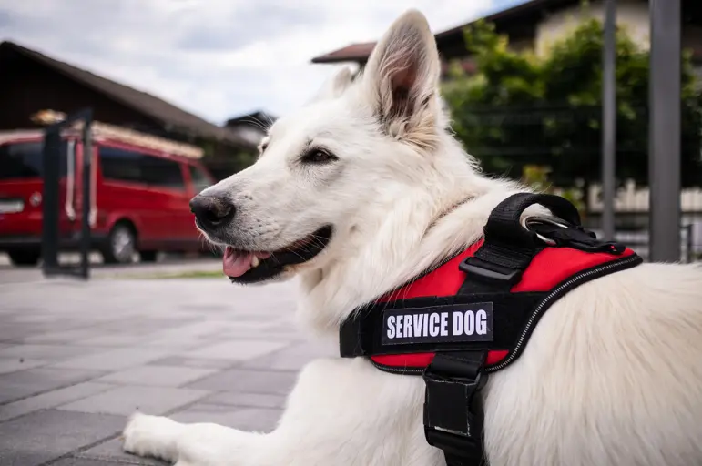
What we do

- Workshops
-
Learn to craft with fabric and yarn with tools and equipment that's chosen for accessibility and fun for just a nominal materials fee.
You can pay with your community points.
- Community Open Studio
-
Scroll-stopping graphics that keep your audience hooked.
- Accessible Popup Shop
-
Clean, modern page designs that make browsing a breeze.


Winter 2026-2027 Workshops
4-Hour Workshops
-
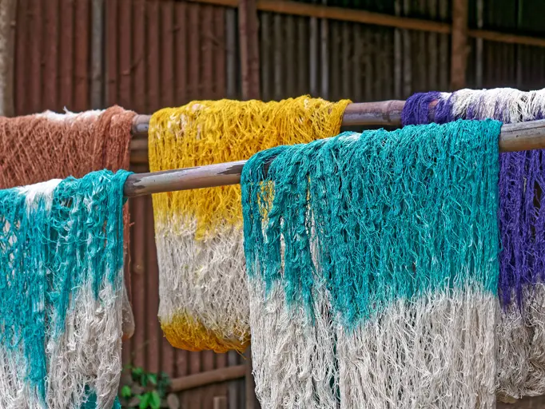
Yarn Dyeing
Helping small business glow up with cohesive branding.
-
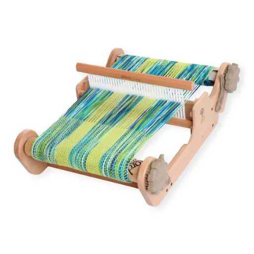
Rigid-Heddle Weaving
Recognized for fresh youthful visual storytelling.
-
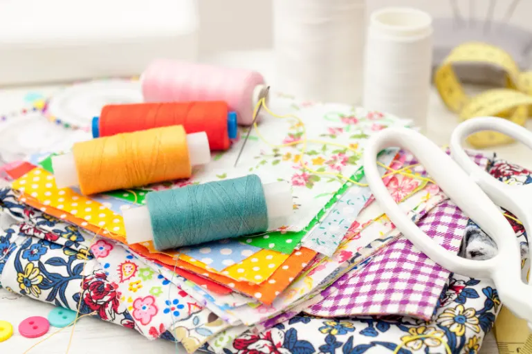
Hand-Sewing
Supporting online personalities with custom content that pops.
Mini-Workshops
Mini-workshops are 30 to 90 minute workshops that run before or during Community Open Studio time. They are either group workshops (4-8 people), or semi-private ( 2 or 3 people). Mini-workshops either teach beginner skills, or expand on what you learned in a regular workshop.
Winter 2026-2027 Mini-Workshops
- Semi-private learn to knit
- Semi-private larn to crochet
- Learn Victorian crazy quilting (for people who’ve done hand sewing 101 and patchwork mini-workshop)
- Frame loom weaving
Depending on studio equipment purchases the following might be also offered:
- Circular machine knitting
- Accessible machine sewing basics
- Inkle loom weaving
- Make your own yarn with an accessible e-spinner
Be the First to Hear About New Workshops and Events!

What Does It Cost?
In short, yes. However, community members can use their community points to cover either 50% of the fee, or in for ODSP recipiants 100% of their materials fee.
There’s a nominal materials fee to register in both 4-hour workshops and mini-workshops. This helps ensure people who register show up, and offsets some of the cost of your yarn and/or fabric.
It also helps with further grant applications, as funders look for matching funding.
Workshops and Mini-Workshops
- Nominal materials fee ($7-15)
- 50% off for ODSP Receipants, max fee $6 ($3.50-$6)
-
Use community points for 50% of the materials fee
- (ODSP reciepants can use their community points for 100% of the materials fee)
Community Open Studio
- $6 ticket
- ODSP Receipants ($3.00)
- Can use community points
NOTE: Materials fees are less than the actual materials cost.
What are Community Points?
Examples
- You volunteers as a greeter at a Community Open Studio
- You earn 825 Comunity Points
- One skein of Briggs and Little Regal is $8.25 (no HST at popup shop.)
- You can purchase a skein after the event, or save up their points for that special something.
To learn more about community points read this post on Curb Cuts Arts’ Substack or by downloading the accessible PDF.
Community Open Studio
A social time to continue your crafting journey without having to buy large expensive tools and equipment, learn something new in mini-workshops, and volunteer to help build our community and earn community point.
Everything is at wheelchair user height. Braille labels will be on many items. No displays blocking your wheelchair, scooter, or rollator. One drink ticket and snack ticket included with admission.
- Access Expensive Equipment
-
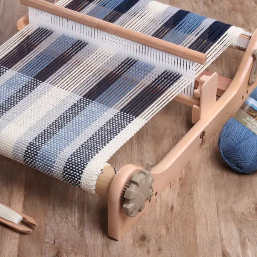
Continue learning and creating after your workshops with having to buy costly equipment or find the space for it.
- Shop in the Accessible Popup Shop
-
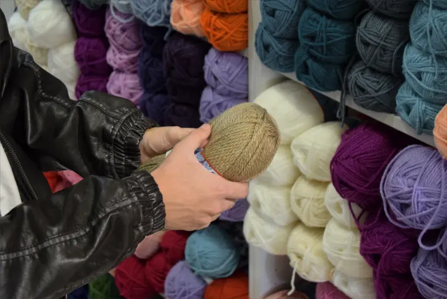
Shop with either your community points or your debit/credit card and a percentage goes towards supporting the Curb Cuts Arts programs.
- Volunteer and Earn Community Points
-
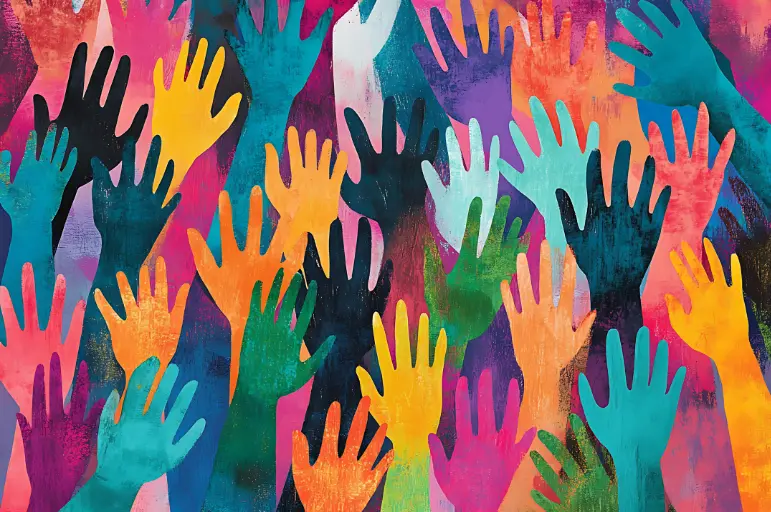
Continue learning and creating after your workshops with having to buy costly equipment or find the space for it.
- Shop in the Accessible Popup Shop
-
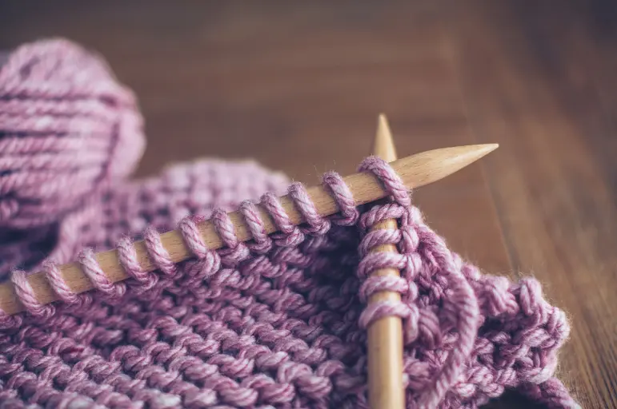
Shop with either your community points or your debit/credit card and a percentage goes towards supporting the Curb Cuts Arts programs.
There’s no HST in the pop up shop!
Visit Eventbrite for dates and
registration
Follow us on Instagram and
subscribe to our free Substack
How do I get Tickets for Community Open Studio?
Visit Eventbrite for dates, and to register Follow us on Instagram and/or subscribe (free) to our Substack newsletter to be the first to know about upcoming events.
- $6.00 ticket
- ODSP Receipants ($3.00)
- Can use community points
NOTE: Materials fees are less than the actual materials cost.
About the Lead Artist
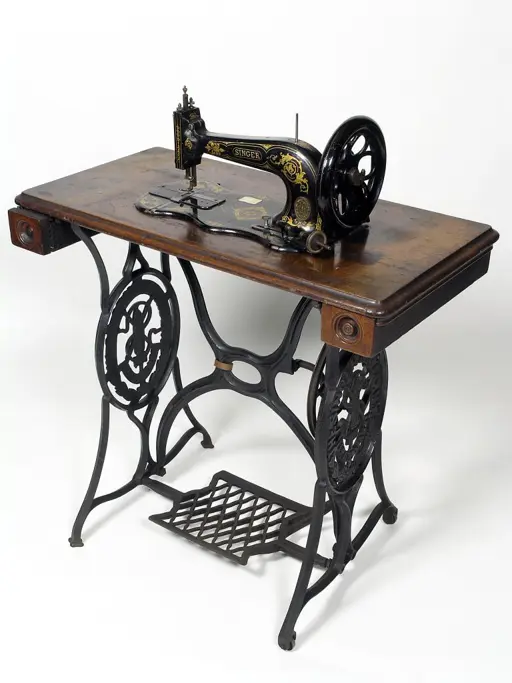
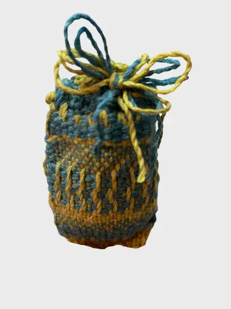
Fun facts!
GoFundMe
You can help make textile and fiber arts more accessible!
$12,500
- Class set of 6 wheelchair accessible Singer smart sewing and embroidery machines, and
- Four LK 150 knitting machines with intarsia carriages for colourwork.
- Six e-spinners, modern day table top electic spinning wheels that are accessible for wheelchair users
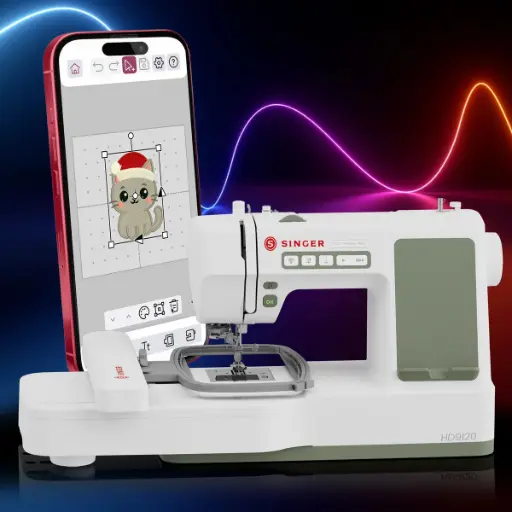
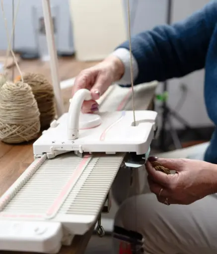

Let's Connect!
Email: hello@curbcuts.art
Socials: @CurbCutsArts
Substack: https://curbcutsarts.substack.com/
Eventbrite: https://curbcutsarts.eventbrite.ca/